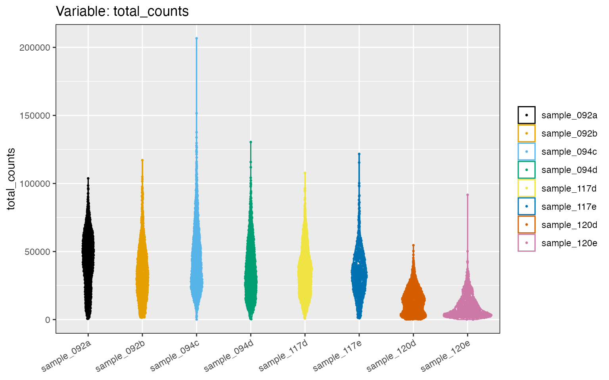

Basic functionality: Visualization, domain detection, and spatial heterogeneity
2025-04-07
basic_functions_vignette.Rmd

The package spatialGE provides
a collection of tools for the visualization of gene expression from
spatially-resolved transcriptomic experiments. The data input methods
have been designed so that any data can be analyzed as long as it
contains gene expression counts per spot or cell, and the spatial
coordinates of those spots or cells. Specialized data input options are
available to allow interoperability with workflows such as Space
Ranger.
Installation
The spatialGE repository is available at GitHub and can
be installed via devtools. To install devtools
(in case it is not already installed in your R), please run the
following code:
if("devtools" %in% rownames(installed.packages()) == FALSE){
install.packages("devtools")
}After making sure devtools is installed, proceed to
install spatialGE:
#devtools::install_github("fridleylab/spatialGE")To use spatialGE, load the package.
library('spatialGE')Spatially-resolved expression of triple negative breast cancer tumor biopsies
To show the utility of some of the functions in
spatialGE, we use the spatial transcriptomics data set
generated with the platform Visium by Bassiouni
et al. (2023). This data set includes triple negative breast
cancer biopsies from 22 patients, with two tissue slices per patient.
The Visium platform allows gene expression quantitation in approximately
5000 capture areas (i.e., “spots”) separated each other by 100μM. The
spots are 55μM in diameter, which corresponds to 1-10 cells
approximately according
to the manufacturer.
Data for all the tissue slices are available at the Gene Expression Omnibus (GEO). For the purpose of this tutorial, we will use eight samples from four patients.
The GEO repositories can be accessed using the following links:
For convenience, the data is also available at our spatialGE_Data
GitHub repository. During this tutorial, we will pull the data from
this repository. Nonetheless, users are eoncouraged to download the data
and explore its contents in order to familiarize with the input formats
accepted by spatialGE. For each sample directory, the file
filtered_feature_bc_matrix.h5 contains the gene expression
counts. The spatial sub-directory contains the
tissue_positions_list.csv,
tissue_hires_image.png, and
scalefactors_json.json files. This file structure,
corresponds roughly to the file structure in outputs generated by Space
Ranger, the software provided by 10X Genomics to process raw Visium
data.
In this tutorial, data will be deposited in a temporary directory. However, the download path can be changed within the following code block:
visium_tmp = tempdir()
unlink(visium_tmp, recursive=TRUE)
dir.create(visium_tmp)
download.file('https://github.com/FridleyLab/spatialGE_Data/raw/refs/heads/main/tnbc_bassiouni.zip?download=',
destfile=paste0(visium_tmp, '/', 'tnbc_bassiouni.zip'), mode='wb')
zip_tmp = list.files(visium_tmp, pattern='tnbc_bassiouni.zip$', full.names=TRUE)
unzip(zipfile=zip_tmp, exdir=visium_tmp)Creating an STList (Spatial Transcriptomics List)
In spatialGE, raw and processed data are stored in an
STlist (S4 class object). As previously
mentioned, an STlist can be created with the function
STlist, from a variety of data formats (see here
for more info or type ?STlist in the R console). In this
tutorial we will provide the file paths to the folders downloaded in the
previous step.
Additionally, we will input meta data associated with each sample.
The meta data is provided in the form of a comma-delimited file. We have
extracted some of the clinical meta data for the eight samples from the
original publication and saved it as part of the spatialGE
package. The user is encouraged to look at the structure of this file by
downloading it from the spatialGE_Data
GitHub repository. The most important aspect when constructing this
file is that the sample names are in the first column, and they match
the names of the folders containing the data:
From the temporary directory, we can use R to generate the file paths
to be passed to the STlist function:
visium_folders <- list.dirs(paste0(visium_tmp, '/tnbc_bassiouni'), full.names=TRUE, recursive=FALSE)The meta data can be accessed directly from the
spatialGE package installed in the computer like so:
clin_file <- list.files(paste0(visium_tmp, '/tnbc_bassiouni'), full.names=TRUE, recursive=FALSE, pattern='clinical')We can load the files into an STlist using this command:
tnbc <- STlist(rnacounts=visium_folders, samples=clin_file, cores=2)
#> Found Visium data
#> Found 8 Visium samples
#> Data read completed
#> Matching gene expression and coordinate data...
#> Completed STlist!The tnbc object is an STlist that contains the count
data, spot coordinates, and clinical meta data.
tnbc
#> Spatial Transcriptomics List (STlist).
#> 8 spatial array(s):
#> sample_117d (1949 ROIs|spots|cells x 23755 genes)
#> sample_117e (754 ROIs|spots|cells x 21662 genes)
#> sample_120d (1359 ROIs|spots|cells x 21886 genes)
#> sample_120e (844 ROIs|spots|cells x 20389 genes)
#> sample_092a (1289 ROIs|spots|cells x 24227 genes)
#> sample_092b (1376 ROIs|spots|cells x 23511 genes)
#> sample_094c (1542 ROIs|spots|cells x 24581 genes)
#> sample_094d (1391 ROIs|spots|cells x 24167 genes)
#>
#> 3 variables in sample-level data:
#> patient_id, neoadjuvant, overall_survival_daysAs observed, by calling the tnbc object, information on
the number of spots and genes per sample is displayed. For count
statistics, the summarize_STlist function can be used:
summarize_STlist(tnbc)
#> # A tibble: 8 × 9
#> sample_name spotscells genes min_counts_per_spotcell mean_counts_per_spotcell
#> <chr> <int> <int> <dbl> <dbl>
#> 1 sample_117d 1949 23755 828 35264.
#> 2 sample_117e 754 21662 1022 34607.
#> 3 sample_120d 1359 21886 171 13831.
#> 4 sample_120e 844 20389 42 9997.
#> 5 sample_092a 1289 24227 559 43225.
#> 6 sample_092b 1376 23511 1413 34809.
#> 7 sample_094c 1542 24581 71 45805.
#> 8 sample_094d 1391 24167 298 37157.
#> # ℹ 4 more variables: max_counts_per_spotcell <dbl>,
#> # min_genes_per_spotcell <int>, mean_genes_per_spotcell <dbl>,
#> # max_genes_per_spotcell <int>The minimum number of counts per spot is 42, which seems low. We can
look at the distribution of counts and genes per spot using the
distribution_plots function:
cp <- distribution_plots(tnbc, plot_type='violin', plot_meta='total_counts')
cp[['total_counts']]
Now, let us remove spots with low counts by keeping only those spots with at least 5000 counts. We will also restrict the data set to spots expressing at least 1000 genes. We also will remove a few spots that have abnormally large number of counts, as in sample_094c. These criteria are not a rule, and samples in each study have to be carefully examined. For example, this criteria may be not enough to reduce the differences in counts, especially for sample_120d and samples_120e.
We run this filter with the filter_data function:
tnbc <- filter_data(tnbc, spot_minreads=5000, spot_mingenes=1000, spot_maxreads=150000)
cp2 <- distribution_plots(tnbc, plot_type='violin', plot_meta='total_counts')
cp2[['total_counts']]
Exploring variation between spatial arrays
The functions pseudobulk_samples and
pseudobulk_pca_plot are the initial steps to obtain a quick
snapshot of the variation in gene expression among samples. The function
pseudobulk_samples creates (pseudo) “bulk” RNAseq data sets
by combining all counts from each sample. Then, it log transforms the
“pseudo bulk” RNAseq counts and runs a Principal Component Analysis
(PCA). Note that the spatial coordinate information is not considered
here, which is intended only as an exploratory analysis analysis. The
max_var_genes argument is used to specify the maximum
number of genes used for computation of PCA. The genes are selected
based on their standard deviation across samples.
tnbc <- pseudobulk_samples(tnbc, max_var_genes=5000)In this case, we apply the function to look for agreement between
samples from the same patient: It is expected that tissue slices from
the same patient are more similar among them than tissue slices from
other patients. The pseudobulk_pca allows to map a
sample-level variable to the points in the PCA by including the name of
the column from the sample metadata (patient_id in this
example).
pseudobulk_dim_plot(tnbc, plot_meta='patient_id')
Users can also generate a heatmap from pseudobulk counts by calling
the pseudobulk_heatmap function, which also requires prior
use of the pseudobulk_samples function. The number of
variable genes to show can be controlled via the
hm_display_genes argument.
hm_p <- pseudobulk_heatmap(tnbc, plot_meta='patient_id', hm_display_genes=30)Transformation of spatially-resolved transcriptomics data
Many transformation methods are available for RNAseq count data. In
spatialGE, the function transform_data applies
log-transformation to the counts, after library size normalization
performed on each sample separately. Similar to Seurat,
it applies a scaling factor (scale_f=10000 by default).
tnbc <- transform_data(tnbc, method='log', cores=2)Users also can apply variance-stabilizing transformation (SCT; Hafemeister and Satija (2019)), which is another method increasingly used in single-cell and spatial transcriptomics studies. See here for details.
Visualization of gene expression from spatially-resolved transcriptomics data
After data transformation, expression of specific genes can be
visualized using “quilt” plots. The function STplot shows
the transformed expression of one or several genes. We have adopted the
color palettes from the packages khroma and
RColorBrewer. The name of a color palette can be passed
using the argument color_pal. The default behavior of the
function produces plots for all samples within the STlist, but we can
pass specific samples to be plotted using the argument
samples.
Let’s produce a quilt plot for the genes NDRG1 and
IGKC (hypoxia and B-cell markers, respectively), for sample
number 1 of patient 14 (samples=sample_094c).
quilts1 <- STplot(tnbc,
genes=c('NDRG1', 'IGKC'),
samples='sample_094c',
color_pal='BuRd',
ptsize=0.8)Because spatialGE functions output lists of ggplot
objects, we can plot the results side-by-side using functions such as
ggarrange():
ggpubr::ggarrange(plotlist=quilts1, nrow=1, ncol=2, legend='bottom')
We can see that gene expression patterns of both genes are non-overlapping: IGKC is expressed in the upper right portion of the tissue, whereas NDRG1 is expressed in the right bottom portion (although relatively lower compared to IGKC as indicated by the white-colored spots). The location of gene expression of those two genes may be indicative of an immune-infiltrated area and a tumor area. With the help of spatial interpolation, visualization of these regions can be easier as will be showed next.
Spatial interpolation of gene expression
We can predict a smooth gene expression surface for each sample. In
spatialGE, this prediction is achieved by using a spatial
interpolation method very popular in spatial statistics. The method
known as ‘kriging’ allows the estimation of gene expression values in
the un-sampled areas between spots, or cells/spots that were filtered
during data quality control. Estimating a transcriptomic surface via
kriging assumes that gene expression of two given points is correlated
to the spatial distance between them.
The function gene_interpolation performs kriging of gene
expression via the fields package. We specify that kriging
will be performed for two of the spatial samples
(samples=c('sample_094c', 'sample_117e')):
tnbc <- gene_interpolation(tnbc,
genes=c('NDRG1', 'IGKC'),
samples=c('sample_094c', 'sample_117e'), cores=2)
#> Gene interpolation started.
#> Gene interpolation completed in 0.53 min.Generating gene expression surfaces can be time consuming. The finer
resolution to which the surface is to be predicted (ngrid
argument), the longer the time it takes. The execution time also depends
on the number of spots/cells. The surfaces can be visualized using the
STplot_interpolation() function:
kriges1 <- STplot_interpolation(tnbc,
genes=c('NDRG1', 'IGKC'),
samples='sample_094c')
#ggpubr::ggarrange(plotlist=kriges1, nrow=1, ncol=2, common.legend=TRUE, legend='bottom')By looking at the transcriptomic surfaces of the two genes, it is easier to detect where “pockets” of high and low expression are located within the tissue. It is now more evident that expression of NDRG1 is higher in the lower right region of the tumor slice, as well in a smaller area to the left (potentially another hypoxic region).
If tissue images were uploaded to the STlist
(tissue_hires_image.png.gz), it can be displayed for
comparison using the plot_image function:
ip = plot_image(tnbc, samples='sample_094c')
ip[['image_sample_094c']]Unsupervised spatially-informed clustering (STclust)
Detecting tissue compartments or niches is an important part of the
study of the tissue architecture. We can do this by applying
STclust, a spatially-informed
clustering method implemented in spatialGE. The
STclust method uses weighted average matrices to capture
the transcriptomic differences among the cells/spots. As a first step in
STclust, top variable genes are identified via Seurat’s
FindVariableFeatures, and transcriptomic scaled distances
are calculated using only those genes. Next, scaled euclidean distances
are computed from the spatial coordinates of the spots/cells. The user
defines a weight (ws) from 0 to 1, to apply to the physical
distances. The higher the weight, the less biologically meaningful the
clustering solution is, given that the clusters would only reflect the
physical distances between the spots/cells and less information on the
transcriptomic profiles will be used. After many tests, we have found
that weights between 0.025 - 0.25 are enough to capture the tissue
heterogeneity. By default, STclust uses dynamic tree cuts
(Langfelder, Zhang, and Horvath 2007) to
define the number of clusters. But users can also test a series of k
values (ks). For a more detailed description of the method,
please refer to the paper describing spatialGE and
STclust (Ospina et al.
2022).
We’ll try several weights to see it’s effect on the cluster assignments:
tnbc <- STclust(tnbc,
ks='dtc',
ws=c(0, 0.025, 0.05, 0.2), cores=2)
#> STclust started...
#> Updating STlist with results...
#> STclust completed in 0.43 min.Results of clustering can be plotted via the STplot
function:
cluster_p <- STplot(tnbc,
samples='sample_094c',
ws=c(0, 0.025, 0.05, 0.2),
color_pal='highcontrast')
ggpubr::ggarrange(plotlist=cluster_p, nrow=2, ncol=2, legend='right')
We can see that from w=0 and w=0.05, we can
only detect two tissue niches. At w=0.025, we gain higher
resolution as one of the clusters is split and a third (‘yellow’)
cluster appears, potentially indicating that an different
transcriptional profile is present there. At w=0.2, the
clusters seem too compact, indicating that the weight of spatial
information is probably too high. We have used here the dynamic tree
cuts (dtc) to automatically select the number of clusters,
resulting in very coarse resolution tissue niches, however, users can
define their own range of k to be evaluated, allowing further detection
of tissue compartments.
Association between spatial heterogeneity and sample-level variables
To explore the relationship between a clinical (sample-level)
variable of interest and the level of gene expression spatial uniformity
within a sample, we can use the SThet() function:
tnbc <- SThet(tnbc,
genes=c('NDRG1', 'IGKC'),
method='moran', cores=2)
#> SThet started.
#> Calculating spatial weights...
#> SThet completed in 0.04 min.The SThet function calculates the Moran’s I statsitic
(or Geary’s C) to measure the level of spatial heterogeneity in the
expression of the genes ( NDRG1, IGKC). The estimates
can be compared across samples using the function
compare_SThet()
p <- compare_SThet(tnbc,
samplemeta='overall_survival_days',
color_by='patient_id',
gene=c('NDRG1', 'IGKC'),
color_pal='muted',
ptsize=3)
p
The calculation of spatial statistics with SThet and and
multi-sample comparison with compare_SThet provides and
easy way to identify samples and genes exhibiting spatial patterns. The
previous figure shows that expression of NDRG1 is more
spatially uniform (lower Moran’s I) across the tissues in samples from
patients 2 and 8 compared to patents 9 and 14. The samples with higher
spatial uniformity in the expression of NDRG1 also tended to
have higher overall survival. Trends are less clear for IGKC,
however, it looks like samples where expression of IGKC was
spatially aggregated in “pockets” (higher Moran’s I) tended to have
lower survival (but note that patient 9 does not follow this trend). As
studies using spatial transcriptomics become larger, more samples will
provide more insightful patterns into the association of gene expression
spatial distribution and non-spatial traits associated with the
tissues.
The computed statistics are stored in the STlist for additional
analysis/plotting that the user may want to complete. The statistics
value can be accessed as a data frame using the
get_gene_meta function:
get_gene_meta(tnbc, sthet_only=TRUE)
#> # A tibble: 16 × 10
#> sample patient_id neoadjuvant overall_survival_days gene gene_mean
#> <chr> <dbl> <chr> <dbl> <chr> <dbl>
#> 1 sample_117d 2 yes 2733 IGKC 3.07
#> 2 sample_117d 2 yes 2733 NDRG1 2.13
#> 3 sample_117e 2 yes 2733 IGKC 2.54
#> 4 sample_117e 2 yes 2733 NDRG1 2.45
#> 5 sample_120d 8 no 1453 IGKC 2.98
#> 6 sample_120d 8 no 1453 NDRG1 0.672
#> 7 sample_120e 8 no 1453 IGKC 2.77
#> 8 sample_120e 8 no 1453 NDRG1 1.05
#> 9 sample_092a 9 no 308 IGKC 0.371
#> 10 sample_092a 9 no 308 NDRG1 1.11
#> 11 sample_092b 9 no 308 IGKC 0.105
#> 12 sample_092b 9 no 308 NDRG1 1.63
#> 13 sample_094c 14 yes 718 IGKC 4.06
#> 14 sample_094c 14 yes 718 NDRG1 1.38
#> 15 sample_094d 14 yes 718 IGKC 3.23
#> 16 sample_094d 14 yes 718 NDRG1 1.25
#> # ℹ 4 more variables: gene_stdevs <dbl>, vst.variance.standardized <dbl>,
#> # moran_i <dbl>, geary_c <lgl>How can the statistics generated by SThet can be
interpreted?
See the table below for a simplistic interpretation of the spatial
autocorrelation statistics calculated in spatialGE:
| Statistic | Clustered expression | No expression pattern | Uniform expression |
|---|---|---|---|
| Moran’s I | Closer to 1 | Closer to 0 | Closer to -1 |
| Geary’s C | Closer to 0 | Closer to 1 | Closer to 2 |
| Note: The boundaries indicated for each statistic are reached when the number of spots/cells is very large. |
To better understand how the Moran’s I and Geary’s C statistics
quantify spatial heterogeneity, tissue can be simulated using the
scSpatialSIM and spatstat packages. Also
tidyverse and janitor for some data
manipulation.
library('rpart')
library('spatstat')
library('scSpatialSIM')
library('tidyverse')
library('janitor')The sc.SpatialSIM package uses spatial point processes
to simulate the locations of spots/cells within a tissue. To facilitate
interpretability of the Moran’s I and Geary’s C statistics, first tissue
will be simulated, and then gene expression values will be
simulated.
The first step is to create a spatstat observation
window:
wdw <- owin(xrange=c(0, 3), yrange=c(0, 3))
sim_visium <- CreateSimulationObject(sims=1, cell_types=1, window=wdw)Next, the sc.SpatialSIM is used to generate the spatial
point process (positions of the spots) within the observation window.
Then, assignments of spots to tissue domains are simulated and
visualized:
# Generate point process
# Then, simulate tissue compartments
set.seed(12345)
sim_visium <- GenerateSpatialPattern(sim_visium, gridded=TRUE, overwrite=TRUE) %>%
GenerateTissue(k=1, xmin=1, xmax=2, ymin=1, ymax=2, sdmin=1, sdmax=2, overwrite=TRUE)
#> x and y range inside window boundary
#> Computing tissue probability
PlotSimulation(sim_visium, which=1, what="tissue points") +
scale_shape_manual(values=c(19, 1))Now, the simulated tissue domain assignments are extracted from the
SpatSimObj object. Gene counts will be simulated in such a
way that:
- Expression of “gene_1” is exclusive to “Tissue_1”. If a spot was
assigned to “Tissue 1”, expression of “gene_1” is 1 (high expression).
If assigned to “Tissue 2”, expression of “gene_1” is 0.1 (low
expression). Given “Tissue 1” spots are aggregated towards the center of
the tissue, it is expected that Moran’s I > 0 and Geary’s C < 1
for “gene_1”.
- Spots with high expression of “gene_2” (expression = 1) are equally separated from spots with low expression (expression = 0.1). This pattern is highly unlikely in a biological tissue. It is expected this pattern yields a Moran’s I < 0 and a Geary’s > 1.
- Expression of “gene_3” results from randomly assigning expression of “gene_2” across the entire tissue. This pattern should result in Moran’s I closer to 0 and Geary’s C closer to 1.
# Extract tissue assignments from the `SpatSimObj` object
# Simulate expression of 'gene_1'
sim_visium_df <- sim_visium@`Spatial Files`[[1]] %>%
clean_names() %>%
mutate(gene_1=case_when(tissue_assignment == 'Tissue 1' ~ 1, TRUE ~ 0.1))
# Generate expression patter of "gene_2"
for(i in 1:nrow(sim_visium_df)){
if(i%%2 == 0){
sim_visium_df[i, 'gene_2'] = 1
} else{
sim_visium_df[i, 'gene_2'] = 0.1
}
}
# Generate expression of "gene_3"
# Set seed for resproducibility
set.seed(12345)
sim_visium_df[['gene_3']] <- sample(sim_visium_df[['gene_2']])To visualize the simulated expression and run SThet, an
STlist is created:
# Extract simulated expression data
sim_expr <- sim_visium_df %>%
add_column(libname=paste0('spot', seq(1:nrow(.)))) %>%
select(c('libname', 'gene_1', 'gene_2', 'gene_3')) %>%
column_to_rownames('libname') %>% t() %>%
as.data.frame() %>% rownames_to_column('genename')
# Extract simulated spot locations
sim_xy <- sim_visium_df %>%
add_column(libname=paste0('spot', seq(1:nrow(.)))) %>%
select(c('libname', 'y', 'x'))
# The `STlist` function can take a list of data frames
simulated <- STlist(rnacounts=list(sim_visium=sim_expr),
spotcoords=list(sim_visium=sim_xy), cores=2)
#> Found list of dataframes.
#> Matching gene expression and coordinate data...
#> Converting counts to sparse matrices
#> Completed STlist!
# Plot expression
ps <- STplot(simulated, genes=c('gene_1', 'gene_2', 'gene_3'), data_type='raw', color_pal='sunset', ptsize=1)
ggpubr::ggarrange(plotlist=ps, ncol=3)As expected, simulated expression of “gene_1” is aggregated (i.e.,
clustered, red spots concentrated towards the center of the tissue).
This result was intently obtained by setting the simulation parameters
to xmin=2, xmax=3, ymin=2,
ymax=3 in sc.SpatialSIM.
# The `SThet` function requires normalized data
simulated <- transform_data(simulated, cores=2)
# Run `SThet`
simulated <- SThet(simulated, genes=c('gene_1', 'gene_2', 'gene_3'), method=c('moran', 'geary'))
#> SThet started.
#> Calculating spatial weights...
#> SThet completed in 0.01 min.
# Extract results
get_gene_meta(simulated, sthet_only=TRUE)
#> # A tibble: 3 × 6
#> sample gene gene_mean gene_stdevs moran_i geary_c
#> <chr> <chr> <dbl> <dbl> <dbl> <dbl>
#> 1 sim_visium gene_1 7.80 0.974 0.0193 0.966
#> 2 sim_visium gene_2 7.68 0.957 -0.0156 1.01
#> 3 sim_visium gene_3 7.68 1.01 0.00371 0.987The results for each of the metrics are as expected: “gene_1” shows aggregation/clustering, indicative of “hot-spot” expression. “gene_2” and “gene_3” show uniform and random expression respectively. Notice that none of these values are very far from the “random” expectation (Moran’s I = 0 and Geary’s C = 1). One of reasons for this result is the effect of library-size normalization. In addition, obtaining extreme values of I and C require extreme spatial patterns, which are unlikely to be observed even in the way data has been simulated here.
References
Session Info
sessionInfo()
#> R version 4.4.2 (2024-10-31)
#> Platform: aarch64-apple-darwin20
#> Running under: macOS Sequoia 15.3.2
#>
#> Matrix products: default
#> BLAS: /Library/Frameworks/R.framework/Versions/4.4-arm64/Resources/lib/libRblas.0.dylib
#> LAPACK: /Library/Frameworks/R.framework/Versions/4.4-arm64/Resources/lib/libRlapack.dylib; LAPACK version 3.12.0
#>
#> locale:
#> [1] en_US.UTF-8/en_US.UTF-8/en_US.UTF-8/C/en_US.UTF-8/en_US.UTF-8
#>
#> time zone: America/New_York
#> tzcode source: internal
#>
#> attached base packages:
#> [1] stats graphics grDevices utils datasets methods base
#>
#> other attached packages:
#> [1] janitor_2.2.0 lubridate_1.9.3 forcats_1.0.0
#> [4] stringr_1.5.1 dplyr_1.1.4 purrr_1.0.2
#> [7] readr_2.1.5 tidyr_1.3.1 tibble_3.2.1
#> [10] ggplot2_3.5.1 tidyverse_2.0.0 scSpatialSIM_0.1.3.4
#> [13] spatstat_3.3-1 spatstat.linnet_3.2-5 spatstat.model_3.3-4
#> [16] spatstat.explore_3.3-4 nlme_3.1-166 spatstat.random_3.3-2
#> [19] spatstat.geom_3.3-5 spatstat.univar_3.1-1 spatstat.data_3.1-4
#> [22] rpart_4.1.24 magrittr_2.0.3 spatialGE_1.2.0
#>
#> loaded via a namespace (and not attached):
#> [1] RColorBrewer_1.1-3 wk_0.9.2 rstudioapi_0.16.0
#> [4] jsonlite_1.8.8 shape_1.4.6.1 spatstat.utils_3.1-2
#> [7] magick_2.8.4 farver_2.1.2 rmarkdown_2.28
#> [10] GlobalOptions_0.1.2 fs_1.6.4 ragg_1.3.2
#> [13] vctrs_0.6.5 spdep_1.3-5 rstatix_0.7.2
#> [16] htmltools_0.5.8.1 curl_5.2.1 broom_1.0.6
#> [19] s2_1.1.7 spData_2.3.1 sass_0.4.9
#> [22] KernSmooth_2.23-24 bslib_0.8.0 htmlwidgets_1.6.4
#> [25] desc_1.4.3 cachem_1.1.0 ggpolypath_0.3.0
#> [28] lifecycle_1.0.4 iterators_1.0.14 pkgconfig_2.0.3
#> [31] Matrix_1.7-1 R6_2.5.1 fastmap_1.2.0
#> [34] snakecase_0.11.1 clue_0.3-65 digest_0.6.37
#> [37] colorspace_2.1-1 S4Vectors_0.42.1 tensor_1.5
#> [40] textshaping_0.4.0 ggpubr_0.6.0 labeling_0.4.3
#> [43] timechange_0.3.0 spatstat.sparse_3.1-0 fansi_1.0.6
#> [46] mgcv_1.9-1 polyclip_1.10-7 abind_1.4-5
#> [49] compiler_4.4.2 proxy_0.4-27 bit64_4.0.5
#> [52] withr_3.0.1 doParallel_1.0.17 backports_1.5.0
#> [55] carData_3.0-5 DBI_1.2.3 highr_0.11
#> [58] ggforce_0.4.2 ggsignif_0.6.4 MASS_7.3-61
#> [61] concaveman_1.1.0 rjson_0.2.22 classInt_0.4-10
#> [64] tools_4.4.2 units_0.8-5 goftest_1.2-3
#> [67] glue_1.7.0 grid_4.4.2 sf_1.0-19
#> [70] cluster_2.1.8 generics_0.1.3 hdf5r_1.3.11
#> [73] gtable_0.3.5 tzdb_0.4.0 class_7.3-22
#> [76] hms_1.1.3 sp_2.1-4 xml2_1.3.6
#> [79] car_3.1-2 utf8_1.2.4 BiocGenerics_0.50.0
#> [82] ggrepel_0.9.5 foreach_1.5.2 pillar_1.9.0
#> [85] vroom_1.6.5 splines_4.4.2 circlize_0.4.16
#> [88] tweenr_2.0.3 lattice_0.22-6 bit_4.0.5
#> [91] deldir_2.0-4 tidyselect_1.2.1 ComplexHeatmap_2.20.0
#> [94] knitr_1.48 gridExtra_2.3 V8_5.0.0
#> [97] IRanges_2.38.1 svglite_2.1.3 stats4_4.4.2
#> [100] xfun_0.47 matrixStats_1.3.0 stringi_1.8.4
#> [103] boot_1.3-31 yaml_2.3.10 kableExtra_1.4.0
#> [106] evaluate_0.24.0 codetools_0.2-20 cli_3.6.3
#> [109] pbmcapply_1.5.1 systemfonts_1.1.0 munsell_0.5.1
#> [112] jquerylib_0.1.4 Rcpp_1.0.13 png_0.1-8
#> [115] parallel_4.4.2 pkgdown_2.1.1 viridisLite_0.4.2
#> [118] scales_1.3.0 e1071_1.7-14 crayon_1.5.3
#> [121] khroma_1.13.0 GetoptLong_1.0.5 rlang_1.1.4
#> [124] cowplot_1.1.3